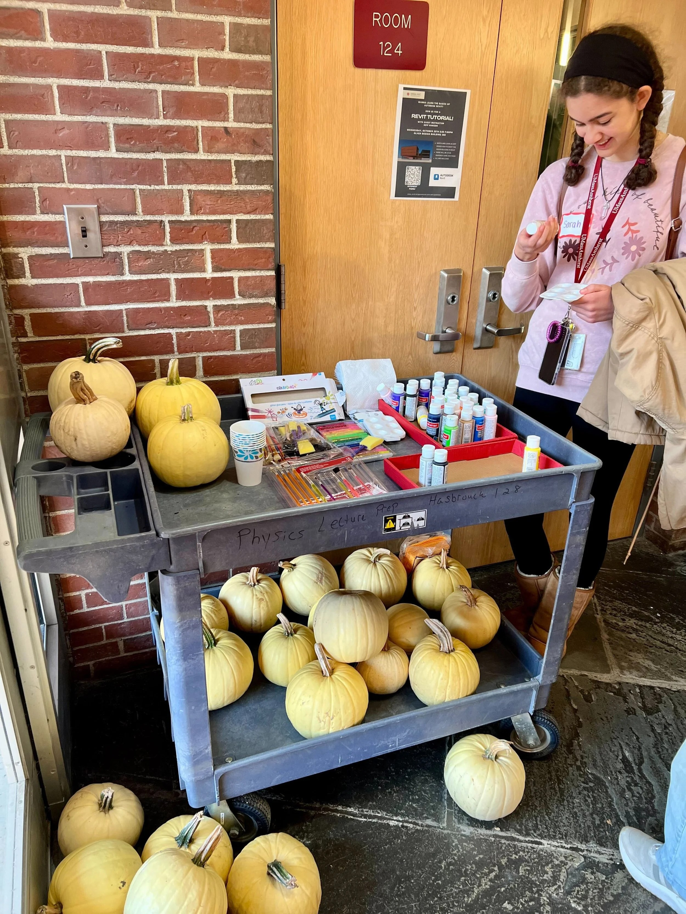
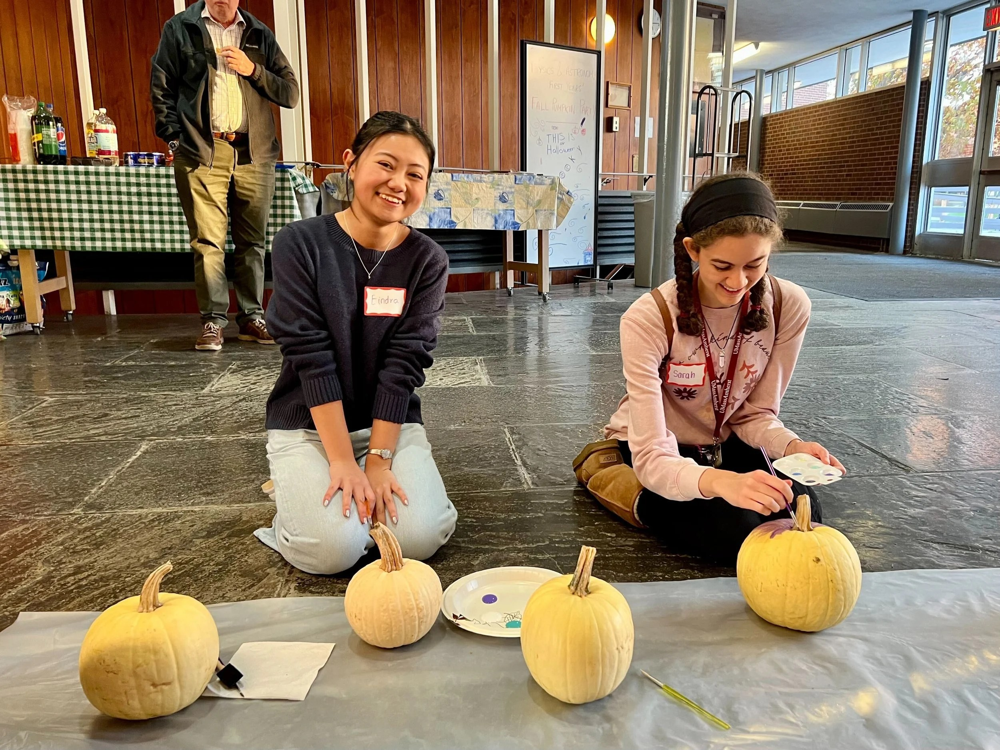
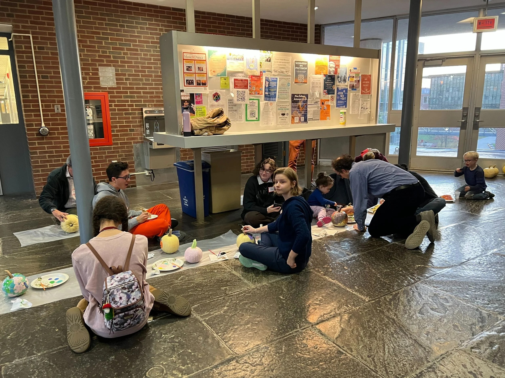
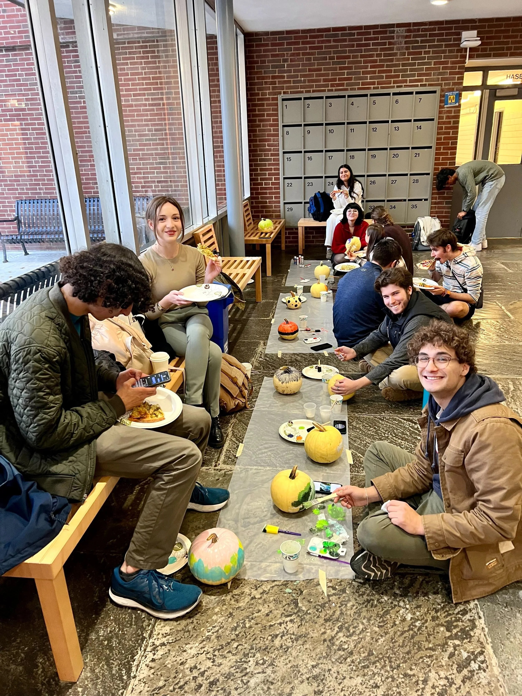
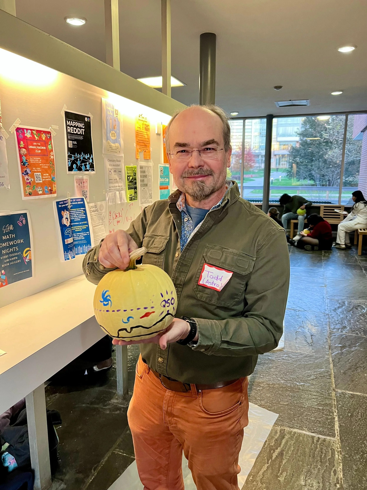
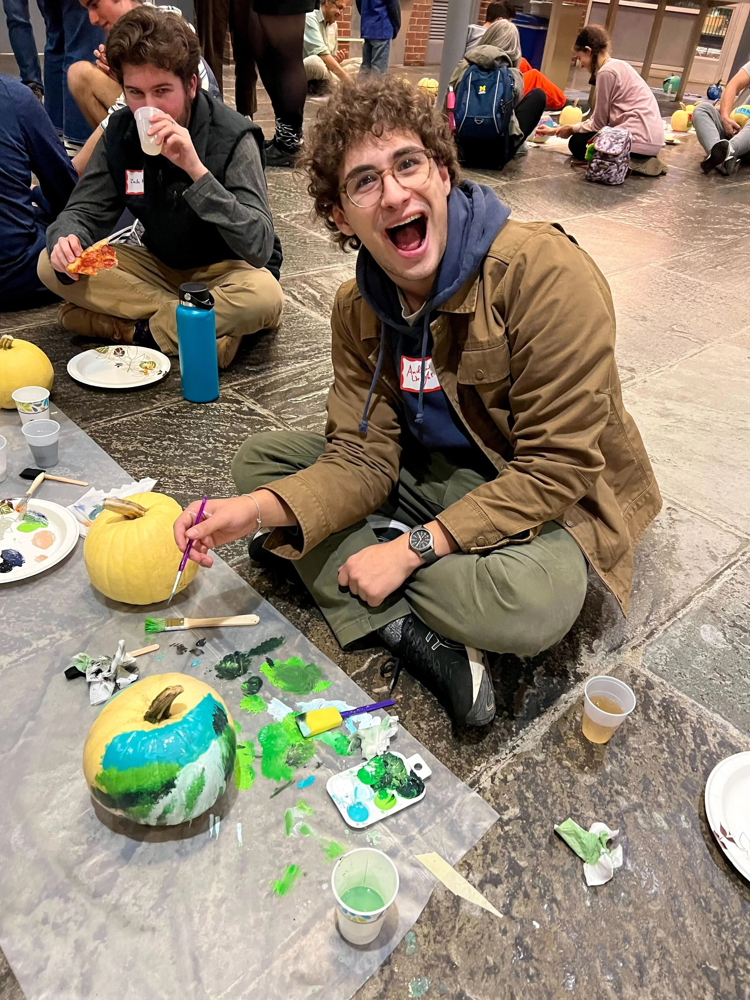
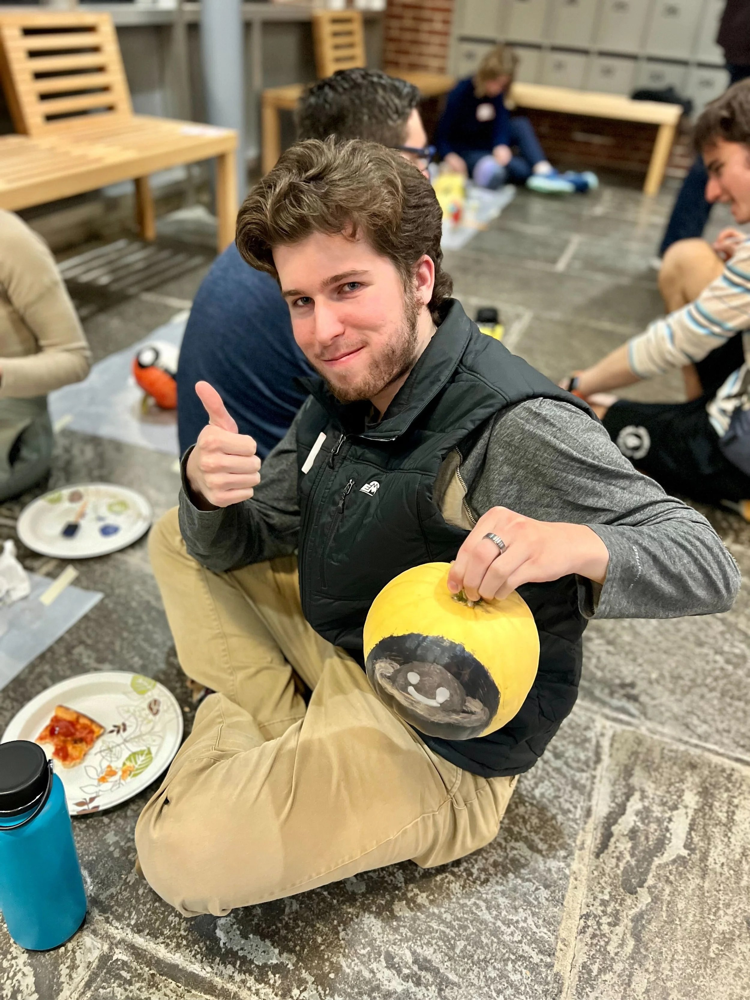
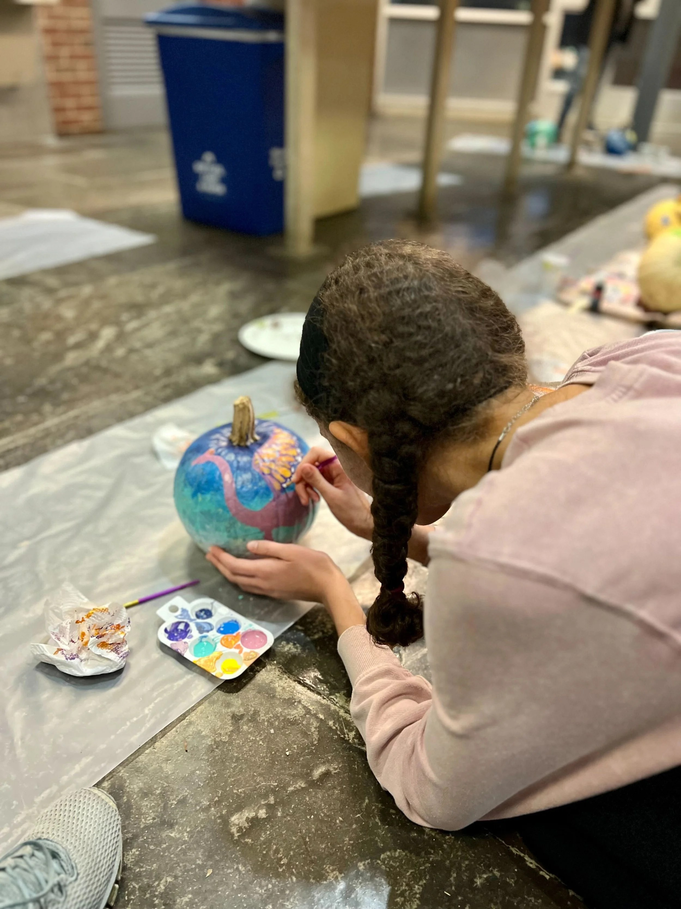
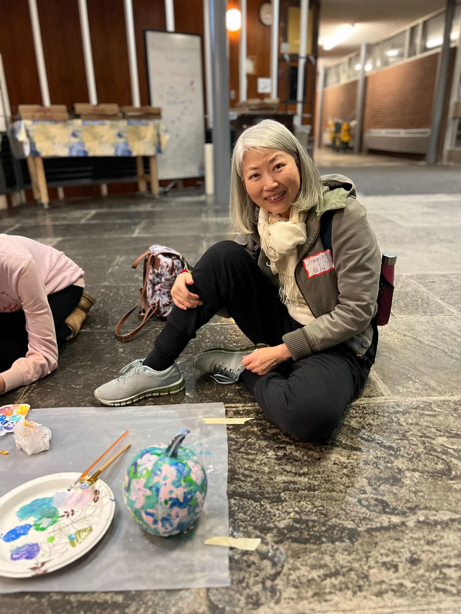
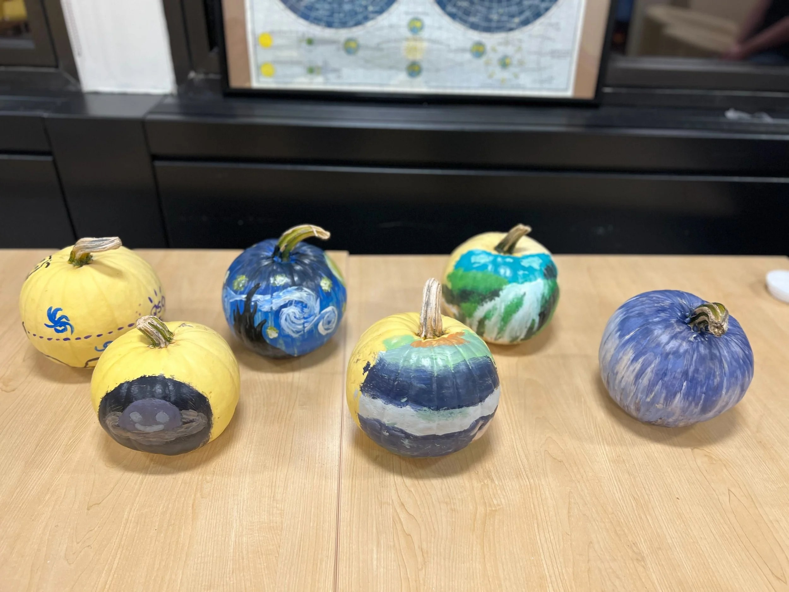

Physics & Astronomy Peer Mentor Program Fall Pumpkin Party
The inaugural Fall Pumpkin Party took place on Friday November 4th for our Physics and Astronomy Peer Mentor Program. All of our peer mentors (junior and senior majors) and mentees (1st year physics and astronomy undergraduate students) were invited to join us in painting pumpkins, eating snacks and pizza, and catching up on how the busy semester is going. We have quite the talented student body, as evidenced by the amazing pumpkin artwork!









